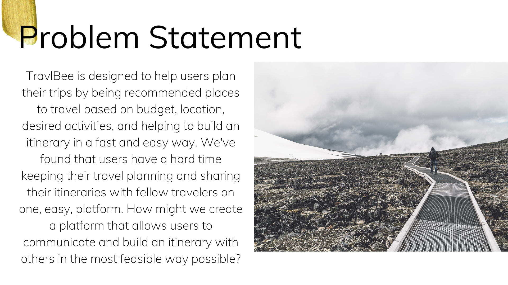
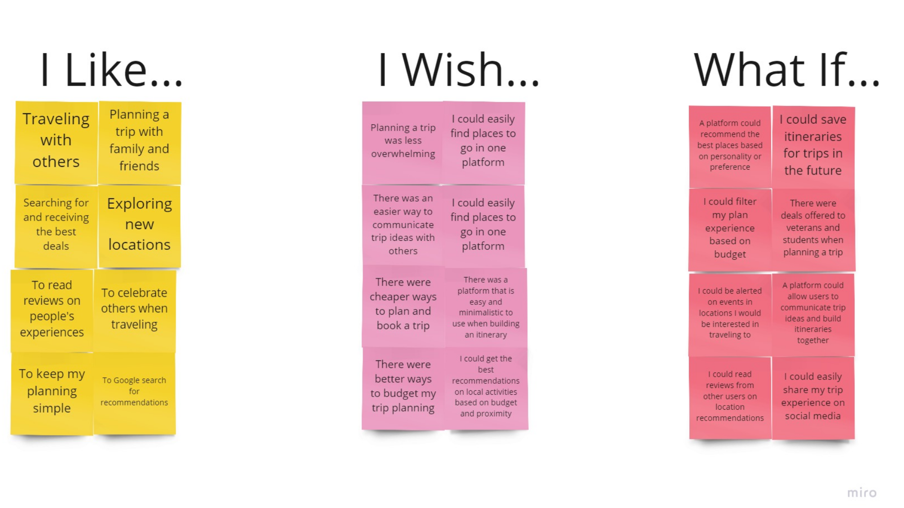
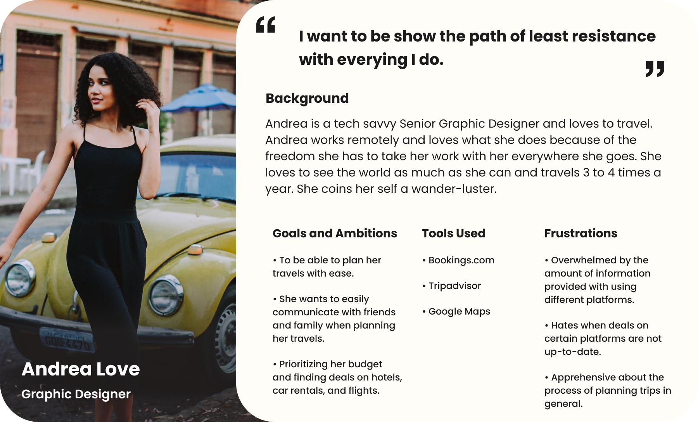

About The Project
TravlBee is an app that allows users to plan a trip and build an itinerary with the option to collaborate with other travelers creating a curated and organized experience.
Challenge
Users have a hard time sharing their itineraries with people they are traveling with in one platform. How might we create a platform that allows users to communicate and build an itinerary with others in the best way possible?
Research
User Interviews
At the discovery phase of the project, I conducted 5 user interviews to get a better understanding of how users go about planning their trips. I wanted to know what platforms they use, how often they travel, why they travel, and what tools they utilize.
What did I find?
-
Location matters to users when traveling.
-
Users mostly utilize the Google search engine when looking for locations to travel.
-
Users mostly text message friends/family when sharing traveling details.
-
Most users travel 3 to 4 times a year.
-
Most users like a simplified experience when looking for activities in a local area.
What the user is saying...
"Planning a trip is the most difficult part of travel. It would be nice to keep most of the planning and booking on one easy platform."
-Janae Whitefield
Affinity Diagram
After interviewing many different users, I continued to ideate the data and separate information into categories.
During our user interviews, we observed that many people use a variety of platforms when planning a trip. I found that users go through many different steps such as searching on Google to find places to go to and for deals on hotels, flights, and car rentals. I observed also that users don't have an organized way of keeping track of all of their booking details and it can be hard to share itinerary information with other fellow travelers.
To combat this problem, we can create an app that allows users to condense their research when it comes to finding a place to travel, the best deals, and booking recommendations that are tailored to their needs as well as allows users to build itineraries collaboratively with other travelers.

I Like, I Wish, What if?..

I allowed users that I interviewed to collaborate on a Miro board by placing their input about what they like about planning trips, what they wish could be implemented better in a travel platform, and thoughts on what could be possible on a platform.
 From further research, I gathered some direct and indirect competitors. While these servises had good to moderately good features and reviews. The biggest priority I wanted to focus on was how to bring forth some assets that already exist on many of these platforms while making sure to personalize and simplify users trip planning experiences.
From further research, I gathered some direct and indirect competitors. While these servises had good to moderately good features and reviews. The biggest priority I wanted to focus on was how to bring forth some assets that already exist on many of these platforms while making sure to personalize and simplify users trip planning experiences.
User Personas

As a result from all the research, I curated a user persona that fit many of the characteristics and points users have made about planning a trip.
Storyboard
Design Phase
Low Fidelity Wireframes
I started my design process with low fidelity, digital, wireframes. I always felt it was easiest to start with digital tools to build out the blueprint using Miro or Figma.
What can users do in the app?

-
Users are able to filter their experience by location, budget, and desired activities.
-
Users are able to browse a location on the homescreen.
-
They can discover and follow other travelers.
-
They can message and collaboratively build an itineraray with fellow travelers.
After testing users I found that some users preferred to have a search icon to look for a location rather than browse the home screen. Many users felt that filtering by location, budget, and desired activities was very ideal.
Final UI Design
Look & Feel
I wanted to keep the design very neutral and minimalistic using white as the base color, dark grey as my secondary color, and black for the accent. I felt these set of colors were professional and simplistic.
Elements That I changed were adding a search icon to the top right of the Discover screen and adding iconography to the user profile page to add more flare.
What have I learned from this project?
I enjoyed the entirety of this project. This was my first UX/UI project I’ve ever done and I learned everything about the UX process from start to finish. I’ve been able to gain a deeper understanding about how important it is to empathize with the user’s pain points, how to observe the quality of a product from a user’s perspective, and how to ideate all of the most important data to turn it into a seamless design.
Being as though this was my first project, there were many aspects I would want to delve deeper in like testing more users to get a bigger picture on what users want in a collaborative travel app. Next time, I would definitely look forward in testing more users to gain a deeper insight.
Thanks for reading!